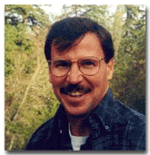
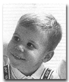
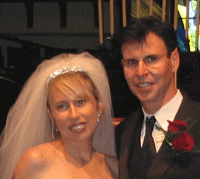

|  |
Scott Douglas Henderson Scott Henderson was born on March 10, 1958 at the Holly Cross Hospital in Pompano Beach, Florida. |
|
|
Important
Facts
|
||
| March 10, 1958 | Born in Pompano Beach, Florida. Scott is the fourth child of Alexander D. Henderson III and Patricia Ford. |
 Scott (age 3) |
| 1958 | The family home was at 3532 N.E. 31st Avenue, Pompano Beach, Florida. | |
| 1960's | Scott attended his Grandfather's school in Florida called the Hillsboro Country Day School. | |
| Click here to see pictures of Scott and his brothers. | ||
| The family moved to Sea Ranch Lakes in Ft. Lauderdale, Florida. | ||
| 1969 | Parents divorce. | |
| Summer 1969 | Scott's Mother moved the family to Carmel Valley, California. |
Scott (age 9) |
| 1976 | Scott graduated from Robert Louis Stevenson School in Pebble Beach, California. | |
| 1980 | Scott graduated from the University of Oregon. | |
| 1980-1983 | Scott became the manager at brother's Daja Vu Mining Company restaurant. | |
| 1984-1987 | Worked for the Chico Enterprise Record as a photo journalist. | |
| 1987 | Moved to Redwood Shores in the bay area. | |
| 1992 | Started his producing career as an Associate Producer on the movie Eyes of the Beholder, starring Matt McCoy, Joanna Pacula, Charles Napier, and George Lazenby. | |
| 1994 | Helped create and produce Blindfold, starring Shannon Doherty and Judd Nelson. | |
| 1995 | Executive producer for The Gifted. He also creates his own company, Gold Leaf Entertainment. |
 Sandra and Scott Henderson |
| 1996 | ProducedNight of Terror starring Chris Mitchum, Bentley Mitchum, and Robert Miano. | |
| 1998 | Produced Strip n Run The Thief and the Stripper starring Michael Madsen, Brion James, Martin Kove, and Roxana Zal. | |
| 2002 | Scott created the Henderson Contracting business. He is busy these days working in the bay area on remodels and other contracting work. | |
| June 18 2005 | Scott married Sandra Duharte at the Menlo Park Presbyterian Church. The reception was at Scott's mother's home in Atherton. The next day, Scott and Sandra flew to Italy for their honeymoon. | |
| May 8, 2006 | Annette Grace Henderson was born. She was 8 pounds, 7 ounces at 4.25 p.m. 19.5 inches. Sandra and Scott Henderson were the proud parents. | |
| Oct 22, 2008 | Chantal Marion Henderson was born. She weighed 9 lbs and was a very fast delivery. Scott D. Henderson is the proud father. |